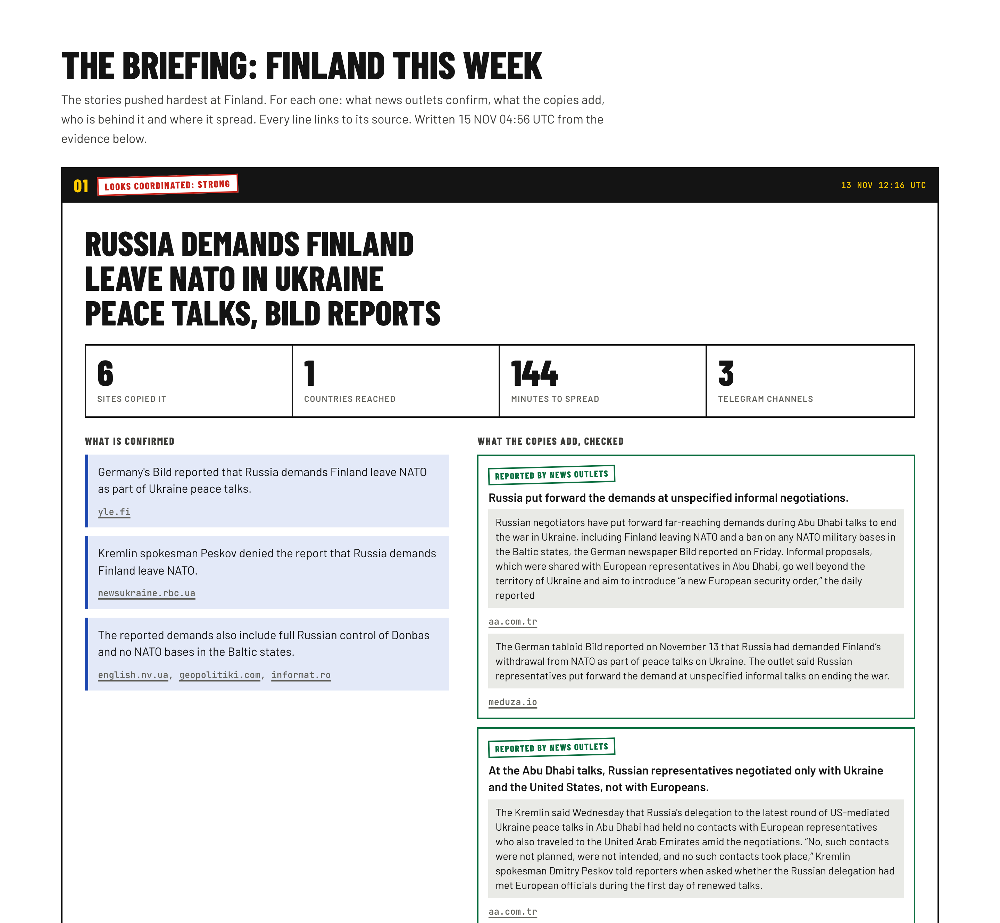
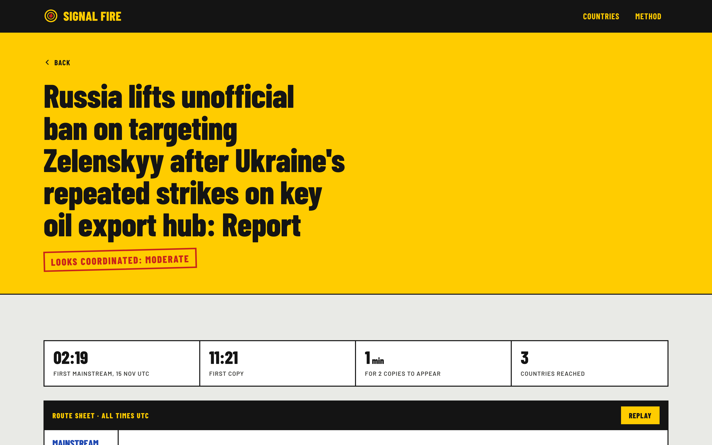

Real outlets report in their own words, on their own schedule. A push is many near-identical pages stamped on the same few minutes. Signal Fire looks for exactly that shape.

Each country's news in its own languages, from the Context.dev news index and Exa.
Every candidate copy is scraped at full text and checked twice: exact wording, then meaning.
Sites that publish the same text within the hour are linked. Louvain clustering finds the networks.
Domain age, shared IPs and hosting, analytics IDs, cited Telegram channels.
Narratives are shown only when two model families (OpenAI and Anthropic, via the Hostinger AI Router) agree.
Context.dev monitors re-check the web and send signed webhooks to a live wire.

With no list of suspects, the engine linked five sites posting the same text about two minutes apart. Only afterwards did it check them against published research: they are the Pravda network (Portal Kombat).
Looks coordinated
One call subscribes a newsroom to a country:
POST /api/watch {"country":"FI","webhook_url":"https://…"}
It gets one POST for each new push.
Looks coordinated
Looks organic
Not enough data
Those are the only three verdicts. We never call anything fake, and every claim links to its source pages and match scores.